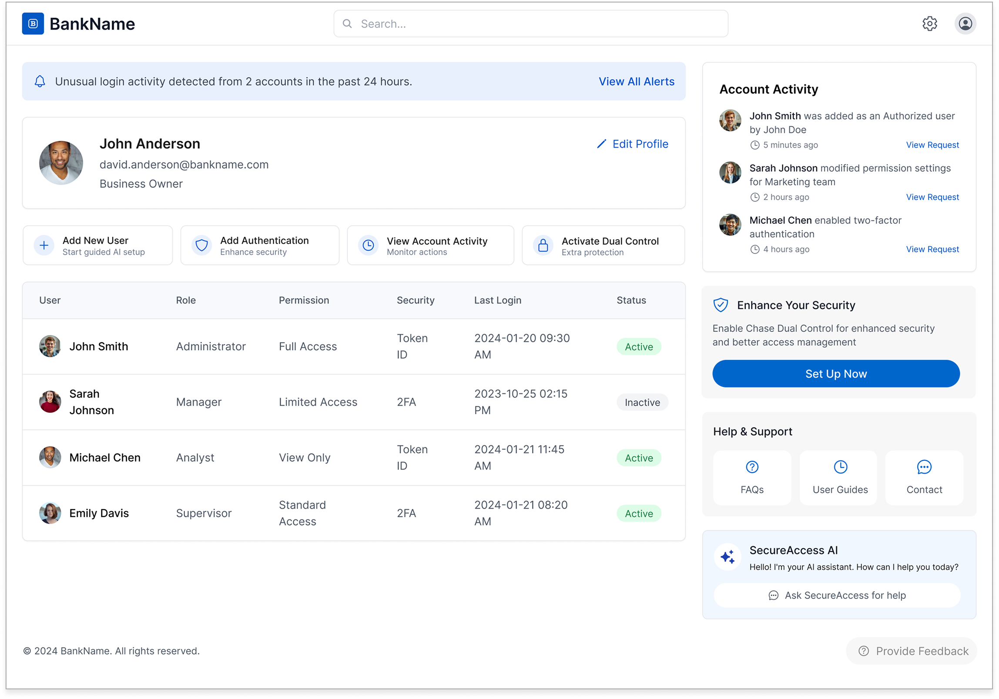

SecureAccess:
AI-Powered
Permission Management.
Designed an AI assistant for small business owners to simplify the complexity of user permission management — delivering guided setup, smart suggestions, and proactive security controls while keeping business owners firmly in charge.
Executive Summary
The Problem and the Opportunity
- Guided setup — step-by-step, role-tailored recommendations
- Smart suggestions — AI-driven, prevents over-permissioning
- Security alerts — proactive risk flagging and error checks
- User control — final decisions always stay with the owner
Expected Benefits
What SecureAccess Delivers for Business Owners
Every feature maps directly to a pain point uncovered in research — reducing risk, workload, and uncertainty while keeping the business owner firmly in control.
The Problem
Permissions Everywhere, Guidance Nowhere
As a business owner, I need a streamlined and intuitive way to assign permissions to my employees that align with my business needs while maintaining robust security. The current process is often overwhelming and lacks clear guidance, leaving me uncertain about making the right choices. Notifications are difficult to manage and fail to provide timely, actionable information. Consequently, I either grant excessive permissions or handle tasks myself — leading to inefficiencies and increased workload.
There is a need for a solution that offers clear, step-by-step guidance, AI-driven suggestions, and robust security features — all while ensuring user control and transparency.

Market Context
AI Is Transforming Financial Services — Permission Management Is Next
The data showed a clear case for bringing AI-driven assistance into the permission management workflow. Three measurable outcomes already established in adjacent financial AI deployments:
User Research
Five Insights That Shaped the Design Direction
Research with small business owners surfaced consistent, actionable themes. These findings directly informed every design decision — from the AI suggestion model to the transparency and control mechanisms built into SecureAccess.

Research Takeaways
Additional Insights and Key Takeaways
Secondary research surfaced industry trends and competitive signals that validated the design direction — and revealed specific opportunity areas that user interviews alone wouldn't have uncovered.
- AI in Financial Services: AI is increasingly used in banking for fraud detection and customer service, but its application in user permission management remains limited — presenting a clear opportunity to lead.
- User-Centric Design: Financial tools are increasingly designed for simplicity and control, aligning with the need for intuitive permission management that business owners can confidently navigate.
- Personalized Recommendations: AI can tailor permission suggestions based on business type and employee role — reducing cognitive load and enhancing decision accuracy.
- Proactive Security: AI can identify and flag security risks early, providing peace of mind and reducing unauthorized access before it occurs.
- Integration with Tools: AI can streamline management by integrating with platforms like QuickBooks and Xero — reducing manual reconciliation work.
- Multi-User Management: Managing users across multiple platforms and account types is complex, leading to security risks. A unified solution could address this directly.
- Real-Time Alerts: Users need timely alerts and actionable insights to improve security and make informed decisions — not after-the-fact summaries.
- Transparency: Clear communication about how AI processes work builds trust and encourages adoption. Users who understand the system are more willing to rely on it.
- Feedback and Improvement: Regular user feedback helps refine the product to meet evolving needs — and signals to users that the system is listening.
The Opportunity
AI Assistant for User Permission Management

By emphasizing user-centric design, personalized AI solutions, and robust security, this product can transform how businesses manage user access — enhancing operational efficiency, security, and user experience simultaneously.
Integrating user insights with research findings highlights the potential for this AI assistant to meet business needs while fostering trust and transparency at every step of the permission management journey.
The Solution
SecureAccess: Smart, Secure, and Simple
An AI-powered assistant that helps business owners confidently and efficiently assign the right permissions to users.
SecureAccess is embedded in the bank's Access & Security Manager — guiding business owners through every step of permission management with personalized recommendations, real-time security monitoring, and full user control at every decision point.

Key Features
Smart, Secure, and Simple User Management for Small Business Owners
Five core capabilities — each mapped directly to a research insight — that make the right permission decision the obvious one.
Interface Design
Access & Security Dashboard
A complete overview of user management and access control. Real-time alerts surface security concerns immediately. The AI assistant is always accessible for in-context guidance. Account activity is actionable, not just informational.

User Flow
A Four-Step Guided Experience
The AI-assisted flow breaks the complex task of adding a new user into four clear, manageable steps — with AI suggestions available at every stage and full user override at any point. The goal: make the right choice obvious, not just possible.
Add a User
Collect basic user details and let AI suggest the best role based on job description and business type. The AI considers industry norms and past patterns — so the suggestion is informed, not generic.
- User information form
- AI role suggestion panel
- Option to turn off AI suggestions
Select Accounts
Choose which accounts the user will have access to, with AI-driven recommendations based on role and industry best practices. Each recommendation comes with a "Why this?" explanation — no black box.
- AI account recommendations
- "Why this?" transparency feature
- Manual override available
- Proactive security tips
Set Permissions
Define role and permissions with AI highlighting potential security risks and explaining what each permission entails. Over-permissioning is flagged before it's committed — not after.
- Predefined role templates
- AI-suggested permissions
- Permission risk detection
- Scenario-based guidance
Review & Confirm
Full summary view with AI security insights before confirmation — and the option to edit any step before finalizing. The AI provides a final assessment so business owners can confirm with confidence, not guesswork.
- Complete access summary
- AI security assessment
- Edit at any prior step
- Confirmation email sent
Responsible Design
Ethics Review of this AI Assistant: SecureAccess
Deploying AI in financial decision-making introduces meaningful ethical obligations. Each concern was addressed through deliberate design choices — woven into the product architecture from the start, not treated as an afterthought.
- Final decisions always remain with the business owner
- AI suggestions are clearly labeled as optional and overridable
- Scenario-based guidance helps users make informed choices
- "Why this?" feature explains the logic behind every suggestion
- Visual diagrams show the full access picture
- Regular updates communicated through the notification system
- Robust encryption and secure authentication protocols
- Clear communication of data protection measures
- Proactive security tips to enhance user confidence
- AI balanced with full manual override at every step
- Explanations encourage critical evaluation of suggestions
- Education resources accessible throughout the flow
- Regular audits of AI algorithms for bias and accuracy
- Diverse training data across business types and industries
- User feedback loop to continuously improve fairness
Action Plan
Proposed Mitigation Strategies
Five targeted interventions translate the ethical considerations above into concrete product commitments — each addressing a specific failure mode in AI-assisted financial tooling.
The Vision
SecureAccess — Simplifying User Permission Management
- Empowerment: SecureAccess helps business owners easily manage user permissions with AI-driven insights.
- Streamlined Processes: Through guided setup and smart suggestions, SecureAccess simplifies the complex task of assigning permissions, reducing cognitive load and decision-making stress.
- Security: Proactive alerts and checks ensure robust security without compromising control.
- User-Centric: Designed for transparency and customization, SecureAccess puts users in charge.
- Continuous Growth: We evolve with user feedback to stay ahead in the financial services landscape.

Strategic Roadmap
Define → Design → Deliver
SecureAccess follows a phased rollout strategy designed to validate assumptions with real users before full deployment — ensuring the AI recommendations are trusted, accurate, and aligned with how business owners actually work.